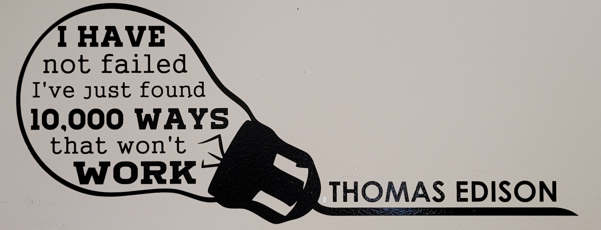

Fall 2021 BCB Orientation Workshops: Basic R
Amy Pollpeter, PhD Student - Willette Lab
Download
If you haven’t already done so, please make sure you have downloaded R and R-Studio You can download them from HERE
What is R?
- Language and environment for Statisitcal Computing and Graphics.
- Provides a wide variety of statistical and machine learning methods.
- Can be used to explore and understand data in an open-ended, interactive way.
- Free software that can be run on a wide variety of platforms (Windows, Mac, Unix/Linux). From r-project.org
Why I Use R?
Admittedly, if you are not familiar with programming, R (like many languages) can have a steep learning curve!
When I first started using it (2 years ago) I HATED IT!
But… I persevered. And grew to use it more than any other program.
Thus, if there is something you want to do, there is probably an R package to do it (we’ll discuss packages more in a minute).
There is also a lot of documentation, tutorials, and cheat sheets online (use them!) I’ll have links to a few of these later. Google will become your best friend when using R.
This quote is now on my wall at home behind where I work. I often spin my chair around and stare at it. When writing computer code - it is incredibly relevant!

Let’s get started!